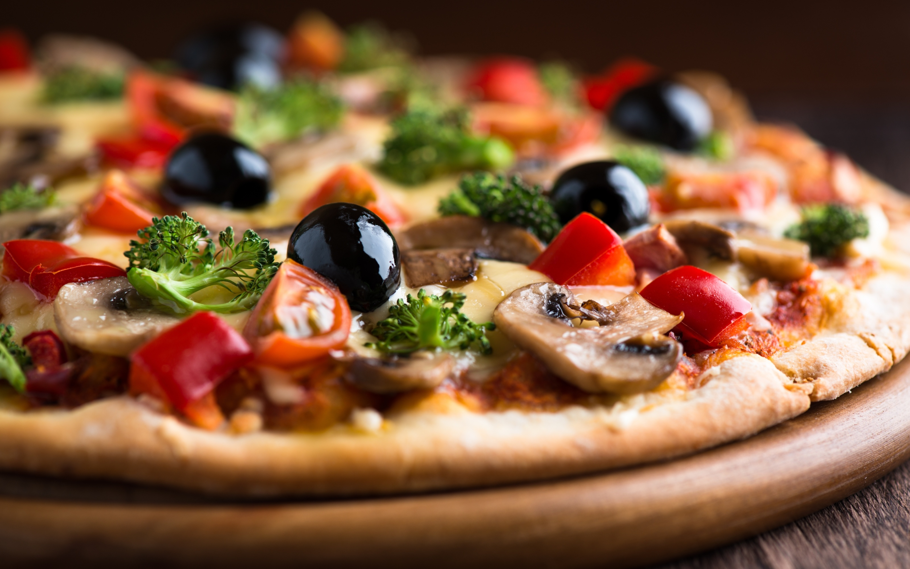
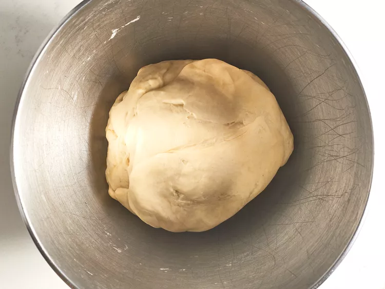

Salami Pizza

Description
If you're looking for a homemade tonno pizza crust recipe that's great for beginners, you're in luck. This top-rated
recipe is super easy to throw together on a whim – and it puts the store-bought stuff to shame. Learn how to
make the best pizza crust of your life with just a few ingredients, find out how to shape the dough, and get our
best storage secrets.
Ingredients
- 1 cup warm water (110 degrees F/45 degrees C)
- 1 (.25 ounce) package active dry yeast
- 1 teaspoon white sugar
- 2 ½ cups bread flour
- 2 tablespoons olive oil
- 1 teaspoon salt
- tunna and onions
Steps
- Gather all ingredients. Preheat oven to 450 degrees F (230 degrees C), and lightly grease a pizza pan.

- Place Warm water in a bowl and mix yeast sugar.

- Add flour, oil, and salt to the yeast mixture;

- Let rest for 5 minutes.

- Turn dough out onto a lightly floured surface and pat or roll into a 12-inch circle.
.webp)
- Transfer to the prepared pizza pan.

- Spread crust with sauce and toppings of your choice.

- Bake in the preheated oven until golden brown, 15 to 20 minutes.